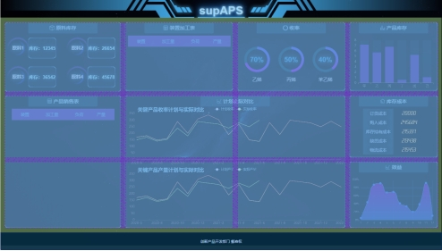
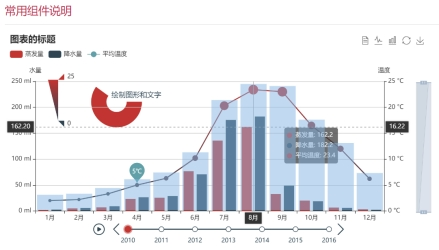

1 背景和意义
数据可视化即把相对复杂、抽象的数据通过可视化的方式以人们更易理解的形式展示出来的一系列手段，旨在更形象地表达数据内在的信息和规律，促进数据信息的传播和应用。在当前Web前端可视化技术的支持下，数据可视化除了“可视”，还有可交流、可互动的特点。数据可视化的本质是数据空间到图形空间的映射。是抽象数据的具象表达。
大屏数据可视化是以大屏为主要展示载体的数据可视化设计。基于大屏展示“大面积、炫酷动效、丰富色彩”等主要特征，通过关键信息大屏共享的方式可方便企业团队讨论与决策，因此大屏也常应用与数据分析监测领域。目前大屏数据可视化主要分为信息展示、数据分析及监控预警三大类。
随着大数据的发展，可视化大屏在各个行业的应用越来越广泛，尤其是在政府、商业、金融、制造等行业的业务场景中。例如，可视化大屏作为传递信息的有效手段，在城市智能运营中心、应急指挥中心、公安监控中心、电力调度中心、金融交易大厅等部门和机构中发挥着重要作用；同时它具有日常监测、分析判断、应急指挥、展示汇报等多种功能，在提高科学管理方面也发挥着重要作用。
2 技术原理
数据可视化展示大屏主要基于React框架、ECharts可视化图表库、CSS布局与适配以及特效制作等Web前端可视化开发技术。
2.1 React框架
React是一个声明式，高效且灵活的用于构建用户界面的JavaScript库。使用React可以将一些简短、独立的代码片段组合成复杂的UI界面，这些代码片段被称作“组件”。数据可视化展示大屏中的每个展示模块均可封装为独立的组件，方便复用与后期维护。
2.2 大屏适配公式
可视化大屏设计稿的比例通常为16:9，为了保证其在不同分辨率及屏幕比例上的展示效果，在开发时需运用大屏适配算法对大屏尺寸信息进行换算。
公式1.1为大屏尺寸适配公式，其中Wp为页面有效宽度，Hp为页面有效高度。
2.3 元素适配公式
锁定好大屏尺寸后，需要利用到CSS3中新增的rem单位结合适配公式，对大屏内部各元素的尺寸针对不同比例的屏幕进行适配。
Rem（Root em）是CSS3新增的一个相对单位，使用rem为元素设定相对尺寸时，相对的只是HTML根元素。通过它既可以做到只修改根元素就成比例地调整所有字体大小，又可以避免字体大小逐层复合的连锁反应。公式1.2为内部元素尺寸适配公式。
2.4 ECharts可视化图表库
ECharts是一个使用JavaScript实现的开源可视化库，涵盖各行业图表，满足各种需求。其主要特点如下：
- 丰富的可视化类型：提供了常规的折线图、柱状图、散点图、饼图、K线图，用于统计的盒形图，用于地理数据可视化的地图、热力图、线图，用于关系数据可视化的关系图、treemap、旭日图，多维数据可视化的平行坐标，还有用于BI的漏斗图，仪表盘，并且支持图与图之间的混搭。
- 多种数据格式无需转换直接使用：内置的dataset属性（4.0+）支持直接传入包括二维表，key-value等多种格式的数据源，此外还支持输入TypedArray格式的数据。
- 千万数据的前端展现：通过增量渲染技术（4.0+），配合各种细致的优化，ECharts能够展现千万级的数据量。
- 移动端优化：针对移动端交互做了细致的优化，例如移动端小屏上适于用手指在坐标系中进行缩放、平移。PC端也可以用鼠标在图中进行缩放（用鼠标滚轮）、平移等。
- 多渲染方案，跨平台使用：支持以Canvas、SVG（4.0+）、VML的形式渲染图表。
- 深度的交互式数据探索：提供了图例、视觉映射、数据区域缩放、tooltip、数据刷选等开箱即用的交互组件，可以对数据进行多维度数据筛取、视图缩放、展示细节等交互操作。
- 多维数据的支持以及丰富的视觉编码手段：对于传统的散点图等，传入的数据也可以是多个维度的。
- 动态数据：数据的改变驱动图表展现的改变。
- 绚丽的特效：针对线数据，点数据等地理数据的可视化提供了吸引眼球的特效。
- 通过GL实现更多更强大绚丽的三维可视化：在VR，大屏场景里实现三维的可视化效果。
3 技术实现方案
3.1 大屏设计流程
-
根据业务场景抽取关键指标
关键指标是一些概括性词语，是对一组或者一系列数据的统称。一般情况下，一个指标在大屏上独占一块区域。以supAPS为例，这里的关键指标有：原料库存、计划实际对比、产品库存与库存成本等。确定关键指标后，根据业务需求拟定各个指标展示的优先级（主、次、辅）。
-
选定可视化图表类型
同一个指标的数据，从不同维度分析就有不同结果。当确定好各项指标的分析维度后，事实上图表类型也就基本确定了。如库存成本选用柱状图的形式，装置加工选用表格的形式，计划实际对比选择折线图的形式等。
-
页面布局
图表类型和屏幕尺寸确立后，接下来要对设计稿进行页面布局的划分。核心业务指标安排在中间位置、占较大面积；其余的指标按优先级依次在核心指标周围展开。一般把有关联的指标让其相邻或靠近，把图表类型相近的指标放一起，这样能减少观者认知上的负担并提高信息传递的效率。
-
页面开发
在定义好分析指标、确定页面布局后，进行前端样式的开发工作，将数据接入到前端并呈现出来。
-
整体细节调优与测试
-
页面开发完成后，将真实页面投放到大屏进行的测试与优化。主要分为两部分：
1）视觉方面的测试：关键视觉元素、字体字号、页面动效、图形图表等是否按预期显示、有无变形、错位等情况。
2）性能与数据方面的测试：图形图表动画是否流畅、数据加载、刷新有无异常；页面长时间展示是否存在奔溃、卡死等情况；后台控制系统能否正常切换前端页面显示。
3.2 大屏适配
基于大屏适配公式，计算页面尺寸。
const clientWidth = document.documentElement.clientWidth
const clientHeight = document.documentElement.clientHeight
window.pageWidth =
clientWidth / clientHeight > 16 / 9
? clientHeight * (16 / 9)
: clientWidth
const pageHeight = pageWidth / (16 / 9)
document.write(`<style>html{font-size:${pageWidth / 100}px</style>`)
在通用SCSS文件中定义实际尺寸rem与设计稿px单位之间的换算关系函数，默认选用分辨率为1920*1080。
@function px($n) {@return $n / 1920 * 100rem;}
3.3 CSS布局
对于内部展示区块，采用CSS3的Grid布局方式。Grid 布局是将容器划分成"行"和"列"，产生单元格，然后指定"项目所在"的单元格，可以看作是二维布局。利用grid-template-areas属性定义区域，通过fr关键字确定区块间的比例关系。

3.4 特效制作
1 边框制作
利用css中box-shadow可以无限叠加的机制，在原来边框的基础上，四角分别叠加两层不同颜色的边框阴影，实现边框效果的制作。
box-shadow:
20px 0 0 -18px #133661, -20px 0 0 -18px #0e325f,
0 20px 0 -18px #0e325f, 0 -20px 0 -18px #0e325f,
10px 0 0 -8px #164b88,-10px 0 0 -8px #0d4483,
0 10px 0 -8px #0d4483, 0 -10px 0 -8px #0d4483;
2 霓虹字体
通过@keyframes编写文本阴影动画，实现标题文本的霓虹闪烁的特效。
@keyframes shining {
from {
text-shadow: 0 0 6px rgba(182, 211, 207, 0.9),
0 0 30px rgba(182, 211, 207, 0.3), 0 0 12px rgba(15, 115, 223, 0.5),
0 0 21px rgba(15, 115, 223, 0.9), 0 0 34px rgba(15, 115, 223, 0.8),
0 0 54px rgba(15, 115, 223, 0.9);
}
to {
text-shadow: 0 0 16px rgba(182, 211, 207, 1),
0 0 30px rgba(182, 211, 207, 0.4), 0 0 22px rgba(15, 115, 223, 0.6),
0 0 32px rgba(15, 115, 223, 0.8), 0 0 48px rgba(15, 115, 223, 0.9),
0 0 70px rgba(15, 115, 223, 1);
}
}
3 表格滚动特效
大屏展示中的表格数据显示范围有限，因此需要使表格自动滚动来动态展示表格数据。根据表格滚动条与顶端距离，即判断scrollHeight与scrollTop的大小关系，通过设置定时器的方式不断增加scrollTop的值，从而实现表格数据自动滚动的效果。
3.5 ECharts图表的制作
引入ECharts库后，通过echarts.init方法初始化ECharts实例并通过setOption方法生成图表。参考官网的option示例配置，根据需求调整坐标轴与系列图形样式的属性参数即可。
将图表本身与其所处区块元素视为一个整体的组件进行开发，提高复用性，方便后期维护。组件采用React函数组件形式，结合useRef、useEffect等hooks函数，实现图表的初始化与参数配置。

3.6 实时更新数据
实时更新数据由于没有实际后端数据，因此使用定时器与随机数的方式模拟实时数据的更新。
setInterval(() => {
const newData = [
{ name: '甲', value: Math.random() * 10 },
{ name: '乙', value: Math.random() * 10 },
{ name: '丙', value: Math.random() * 10 },
]
renderMyChart(newData)
}, 1000)
最后修改于 2021-05-28